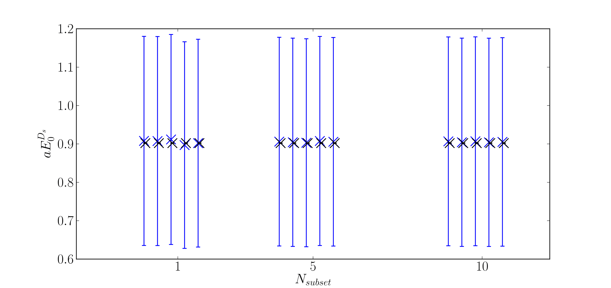
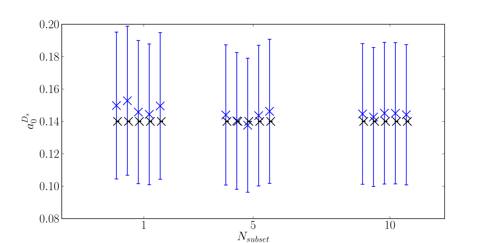
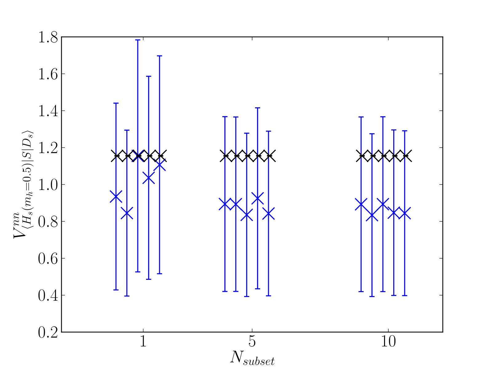

More Details¶
How it works¶
Getting good priors from a single correlator is possible due to the nice properties of correlation functions in QCD. The effective mass of a single correlator gives a good estimate of the true mass for example. We first take the sacrificed correlator and perform a second-order superaverage
C(t) -> ( C(t-1) - 2C(t) + C(t+1) ) / 4
This drowns out any effects from oscillating states in the case of staggered quarks. Then, the prior for the ground state energy is calculated via
E_0 = [ mean over t=t_cut -> t=T_lat/2-t_cut ] log( C(t) / C(t+1) )
The variance of this is inflated by 30% (one can choose a custom amount using the optional argument “loosener”). t_cut is another optional argument, with a default of T_lat/10.
Similarly, the ground state amplitude is given by
a_0 = [ mean over t=t_cut -> t=T_lat/2-t_cut ] sqrt( C(t) * e^{ E_0 t } ) * 30% additional error
The excited state parameters are computed by transforming the correlator ( C(t) -> C(t) - a_0^2 * exp( - E_0 t ) ), then finding E_0 and a_0 values in the same way as above on this transformed correlator.
Priors for oscillaing states are guessed from knowledge of the non-oscillating states, i.e. basically the same with larger errors.
3-point amplitudes are estimated using the ratio
R = [ mean over t=t_cut -> t=T-t_cut ] ( C_{3pt}(t)/ C_{2pt,1}(t) * C_{2pt,2}(T-t) ),
where the C_{2pt,1/2} are the correlators for the two states on either side of the current. t is the timeslice of the current and T is the source/sink temporal separation. This ratio is equal to J/(a_1 * a_2), where J is the transition amplitude and a_{1/2} are the amplitudes of the 2-point correlators. Then we find J = R * a_1 * a_2. The rest of the 3-point priors, those coupling to oscillating states and excited states, are generically set to 0.0(1.0).
Some Tests¶
I ran some tests.
This is the ground state energy of a D_s meson, computed using the HISQ action on the MILC 2+1+1 ensembles. N_subset is the number of points used to deduce priors, which are shown in blue. The black points are fit results from fitting 986-N_subset correlators using corrfitter, using these priors. I ran each test 5 times (hence 5 points per N_subset choice), each with a different randomly chosen subset.
Here is the same thing for the ground state amplitude:
And for a 3-point amplitude of a scalar current between a Ds meson and a heavy-strage meson (with heavy mass = 0.5):
